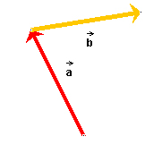
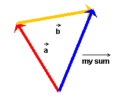
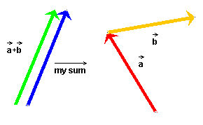
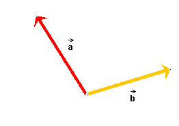
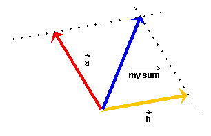

Prerequisite
Students should know about the basic vector properties of magnitude and direction.
Learning Outcomes
Students will be able to graphically add two vectors by the Tip-to-Tail and Parallelogram methods.
Instructions
Students should know how the applet functions, as described in Help and ShowMe.
The applet should be open. The step-by-step instructions in the following text are to be done in the applet. You may need to toggle back and forth between instructions and applet if your screen space is limited.
 Constructing The Resultant (Sum) of Two Vectors
Constructing The Resultant (Sum) of Two Vectors
 (a)
Tip-to-Tail Method
(a)
Tip-to-Tail Method
 (b) Parallelogram Method
(b) Parallelogram Method
Constructing The
Resultant (Sum)
There are two methods for constructing the sum of two vectors graphically: the Tip-to-Tail Method and the Parallelogram method. These methods will now be demonstrated. Note that another word for "sum of two (or more) vectors" is resultant.
If you wish to add more than two vectors, you can first add any two vectors, then add their resultant to a third vector, etc. The order in which the vectors are added is immaterial, because vector addition obeys the commutative and associative laws.

(a) Tip-to-Tail Method.
If the applet screen is not empty, clear it by pressing Reset
 .
.
Draw two vectors in the applet window. The applet will label the
two vectors  and
and  .
.
Arrange the two vectors so that the tail-end of vector is aligned with the tip of vector .
When done, the vectors should be arranged as shown in Figure 1 below. (For the purpose of following this lesson, you may want to adjust your vectors to look like those in Figure 1.)

Figure 1
To draw the resultant, select the Draw-Your-Sum button  and draw the vector from the free
tail end of the arrangement shown in Figure 1 to the free tip. (Not
the other way around!) The result is illustrated in Figure 2
below. The applet draws your resultant in blue and labels it "my
sum". The resultant shown in Figure 2 is the correct resultant.
and draw the vector from the free
tail end of the arrangement shown in Figure 1 to the free tip. (Not
the other way around!) The result is illustrated in Figure 2
below. The applet draws your resultant in blue and labels it "my
sum". The resultant shown in Figure 2 is the correct resultant.

Figure 2
Here is an easy way to remember in which direction to draw the resultant. Think of the two vectors as displacements, one displacement following another. Then the resultant is the overall (net) displacement, from the point where the first displacement starts to the point where the second displacement finishes.
Once you have drawn your resultant, the Answer button  becomes active. When you press this
button, the applet will draw the correct resultant in green and
label it + .
becomes active. When you press this
button, the applet will draw the correct resultant in green and
label it + .
You can compare your resultant to the correct resultant by dragging yours next to the correct one, as shown in Figure 3 below, or make the two overlap completely. You can also move the correct resultant.

Figure 3
(b) Parallelogram Method.
If the applet screen is not empty, clear it by pressing Reset
.
Draw two vectors in the applet window. The applet will label the
two vectors and . (For the purpose of following this lesson, you may
want to adjust your vectors to look like those in Figure 4 below.)
Join the two vectors tail end to tail end, as in Figure 4.

Figure 4
Think of these two vectors as spanning a parallelogram, i.e., as forming two sides of a parallelogram whose other two sides still need to be constructed.
The applet lets you draw the remaining two sides of the parallelogram with dotted lines. The result is shown in Figure 5 below, including the correct resultant as drawn by the student. The resultant vector goes from the point where the tail ends of the vectors join to the opposite corner of the parallelogram. (For drawing the resultant, see the section on the Tip-to-Tail method above.)

Figure 5
Hint. To make sure that the dotted lines are parallel to the given vectors, draw the lines initially on top of the two vectors. Then move them into their correct positions by making them intersect the tips of the respective vectors.
Finally, you can compare your resultant to the correct resultant drawn by the applet as described at the end of the section on the Tip-to-Tail method.
Exercise. Demonstrate that the two methods lead to the
same resultant by rearranging the vectors + when they are
aligned as in Figure 5 into the tip-to-tail alignment shown in
Figure 2. It should be apparent that the same resultant applies in
both cases. All you need to do is to move vector onto the opposite side of the parallelogram that is
occupied by a dotted line.
You could also move vector onto
the side opposite to it and that way demonstrate that it does not
matter which vector is put down first and which vector joined to it
in the Tip-to-Tail method.